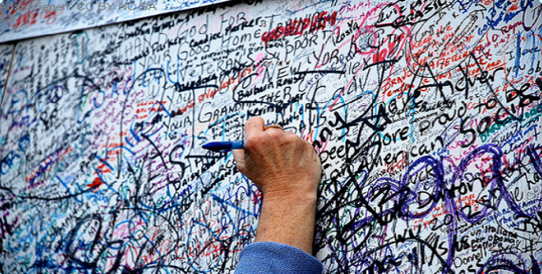
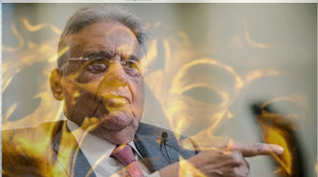

Fatos e Narrativas
Fatos e Narrativas
-
Na tela terrorismos e atentados suicidas.

O PMDB desembarca do governo Dilma. Moro desrespeita as leis e propaga a idéia de que vale tudo contra o inimigo escolhido. A medida que o golpe vai se encaminhando se ve o suicidio das instituições perpetrado pelos próprios membros.04/04/2016
Colagem de Manchetes:Um governo sem projeto mas com Plano de Negócios. Uma colagem das manchetes da grande mídia mostra uma imprensa sem críticas e quase aplaudindo um governo sem projeto mas com um ativo Plano de negócios. 17 MAR 2019
Os cães ladram e a caravana Guedes passa.A verborragia ideológica de Bolsonaro sobe de tom enquanto a caravana liberal de Guedes vai passando o rodo. Guedes é o liberal mais puramente ideológico mas só discursa quando necessário aos seus planos de negócios.
Análise de redação do texto Terrorismo Digital de Pondé.Uma análise do artigo: Terrorismo Digital de Pondé na Folha de São Paulo de 17 de junho de 2019. Depois de analisado concluímos que não passaria no exame de redação do ENEN. O texto é um terror.
FHC, uma tragédia quase grega. Comentário ao post “FHC e Lula: a inveja por trás da tragédia brasileira, de Luis Nassif“,GGN.